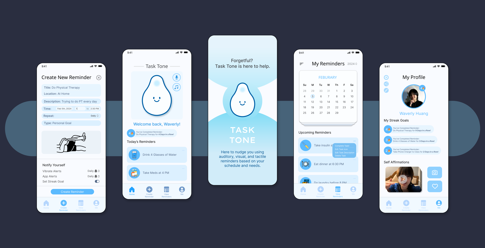
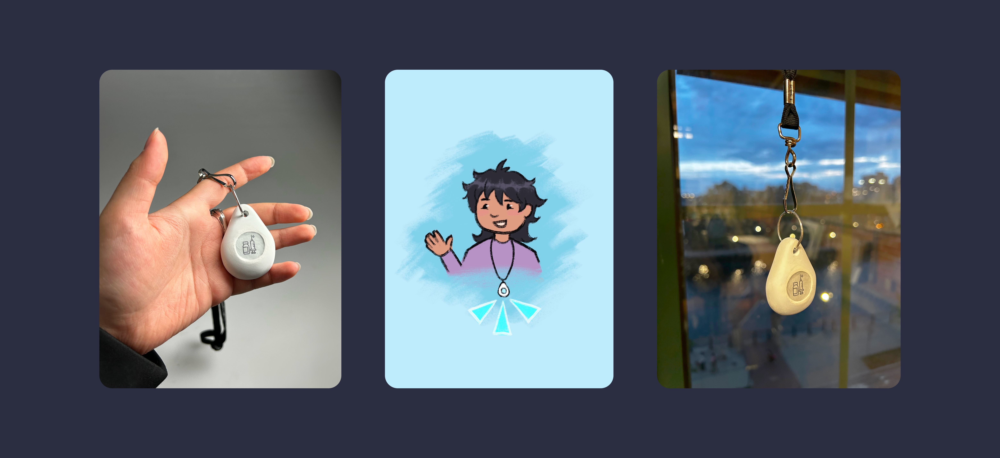
Task Tone
A specialized digital-physical duo who will always gently nudge you using auditory, visual, and tactile reminders based on your schedule and needs.
00. Initial thoughts...
Everyone is forgetful to a degree
This project was inspired by the needs of my mother, who has hearing and memory loss. However, everyone can benefit from extra nudges and motivation to complete tasks on time.
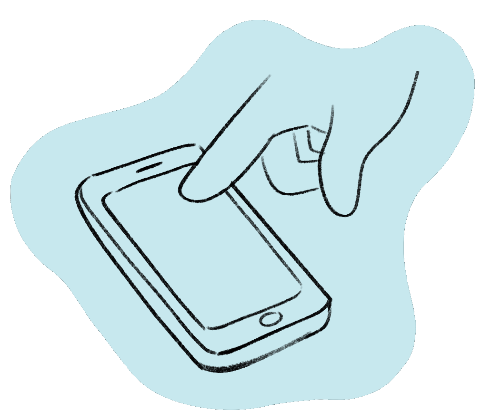
01. Understanding the Challenge
How can I create easily accessible auditory and visual reminders?
What kinds of reminders do work, and how do they fit into daily life?
How can I create a reminder app that is different from existing ones?
How can I create a physical product which also gives effective reminders?
02. Task Tone Feature Showcase
Key Features
Banner & App Notification
When a task is incomplete, the app border becomes a warning color and the icon changes from a happy face to sad
Duolingo has multiple owl icons: one with X's over its eyes, or sick-looking, to get an influx of user attention
Create Reminder
This determines how often the physical Task Tone product will vibrate in reminder
This determines how often the digital Task Tone app will push notifications
Including a 'Streak Goal' option lets users decide if the reminder has a streak, motivating them to complete possible tasks
Based on feedback, setting times via dropdowns can be frustrating, so I added a typing feature
Calendar View
Easier to see, create, and customize reminders. Trying to make the calendar view familiar and accessible
Editing reminders is streamlined and easier to view with a separate expanded tab
Task Tone Warning Faces
1.) Normal, smiling face: not incomplete task
2.) Yellow, sad face: 5 minutes over task
3.) Orange, sad face: 10 minutes over task
Having two additional push notifications for an incompleted reminder is the extra nudge people need to complete it
Because users reported struggling with motivation, the personification of the app will help motivate
Wireframe Changes
📝 Friendlier calendar & reminder UI
📝 Synthesizing reminder customizations
📝 Simplified bottom navbar
03. Pain Points
PROJECT INSPIRATION
👂
Hearing Loss
My mom sometimes forgets to take her insulin shot every night. Due to her being deaf in one ear, auditory alerts don't work for her. Additionally, she often can't find her phone, much less hear auditory reminders.
💤
Easily Ignored
My dad often ignores alarms on his phone, as they're easy to click stop. He also mentions how snoozing an alarm is kind of like having a 'second' reminder, so to add onto that feature: could there be a feature that pushes reminders after the initial time?
😪
Lack of Motivation
A friend I interviewed emphasized how it can be easy to ignore reminders if there's no true motivation to keep up the task it wants you to complete.
📱
Lack of Phone
A friend I interviewed mentioned how she doesn't have her phone on her constantly, so reminders that are purely cellular are not as useful as they could be.
Problems & Solutions
With one press or swipe, a reminder notification can be ignored (snoozed, or stopped)
Users cannot snooze or stop a reminder with one motion
With easy-to-ignore reminders, comes a lack of motivation and deadline sensitivity
Users can customize how 'easy' it is to ignore a reminder
Reminders often rely on auditory cues, which are not accessible for broader audiences
Reminders can have both auditory and visual cues
For reminders to have more access, they must take on forms outside of only cellphones
This product will have a mobile app and portable physical form
04. Quantitative Data
Survey Results
Survey One: Is Your Form of Reminders Less than 50% Effective?
115 Total Answers
of Google Calendar users said G-Cal is less than half effective
of Phone Alarm users said they are less than half effective
of To-Do List users said they are less than half effective
of people said task/reminder apps are less than half effective
Survey Two: What Kind of Reminders are Most Effective for You?
78 Total Answers
of the respondents said Visual Reminders are most effective
of respondents said Auditory Reminders are most effective
of users said both Visual and Auditory Reminders are most effective
I need to utilize every form of reminder and make it customizable
📌 Visual reminders are the most effective
📌 Existing task and reminder apps were the least effective for people who used them
📌 Google Calendar was the most effective for people who used it
05. Physical Form
Initial Product Model Making & Process
First Round of Sketches
Trying to think about what shape and form the speaker should take. At this point, unsure how portable it should be

Second Round of Sketches
After review, I decide to go for a less traditional speaker shape, something handheld and friendly to interact with
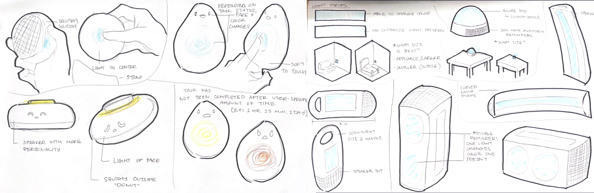
📌 People want something friendly to use, not another piece of useless plastic
📌 Enjoyable tactile sensations add the most 'friendliness'
First Round of Sketch Models
Thinking about the 'squish' factor of each model, and having it be comfortable to hold in either your left or right hand
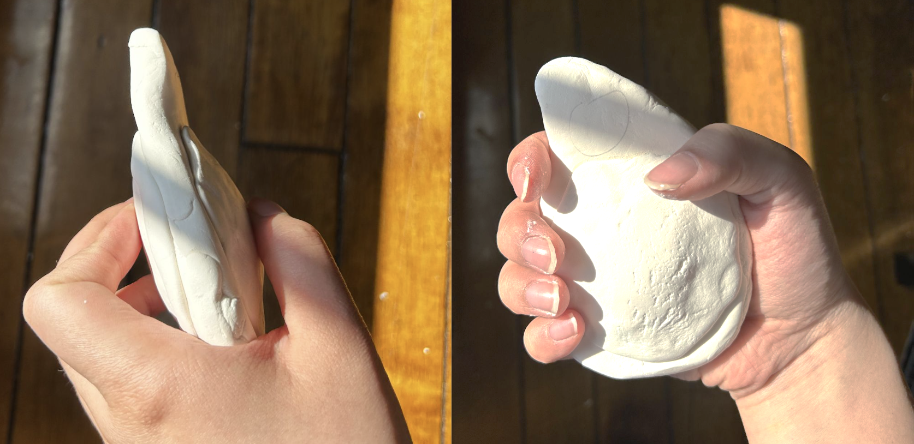
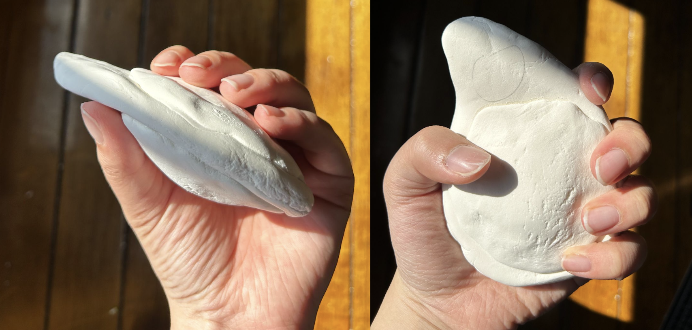
📌 If this physical product is meant to remind you of tasks, it should be smaller and less obstructive
📌 When I asked people if I should add a friendly face to add to the 'friendliness' of the product, they said it seemed unnecessary
Second Round of Sketch Models
After review, I follow the takeaways and decide to create a physical model that's much smaller and more portable. I made a medium-small version (left) and a small version (right)
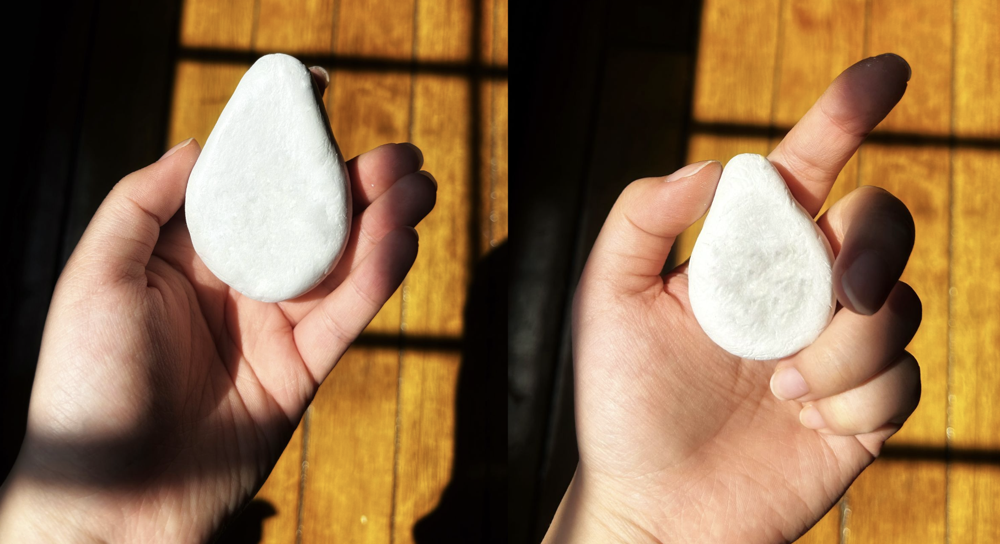
📌 People really liked how both of these felt: you could be right or left-handed, and these were much easier to carry around
📌 "The smaller, the better, the more portable" - My classmate
Final Product Model Making & Process
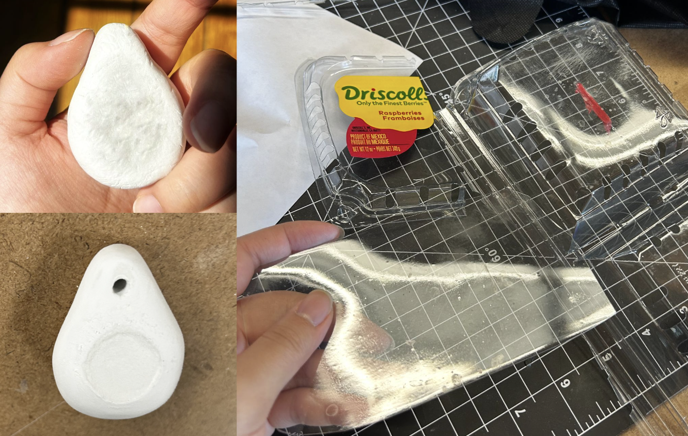
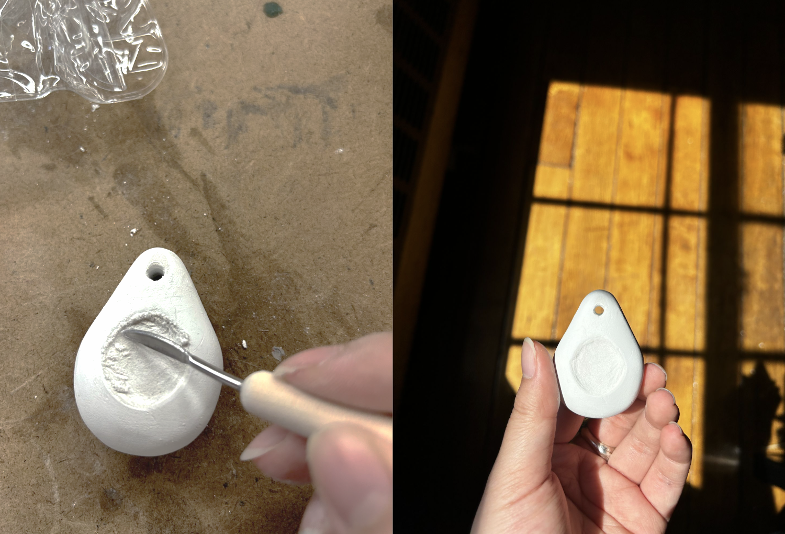
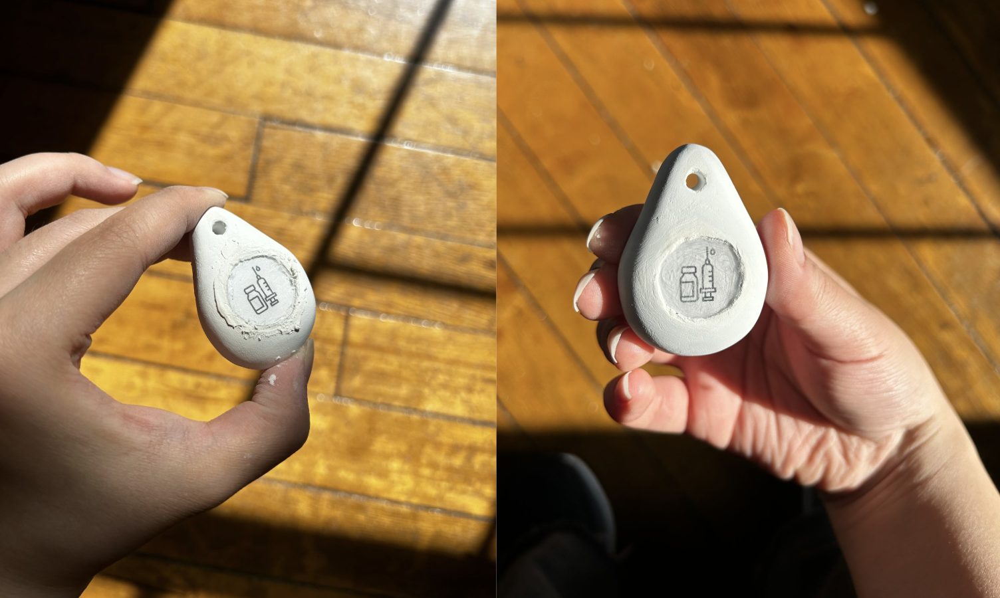
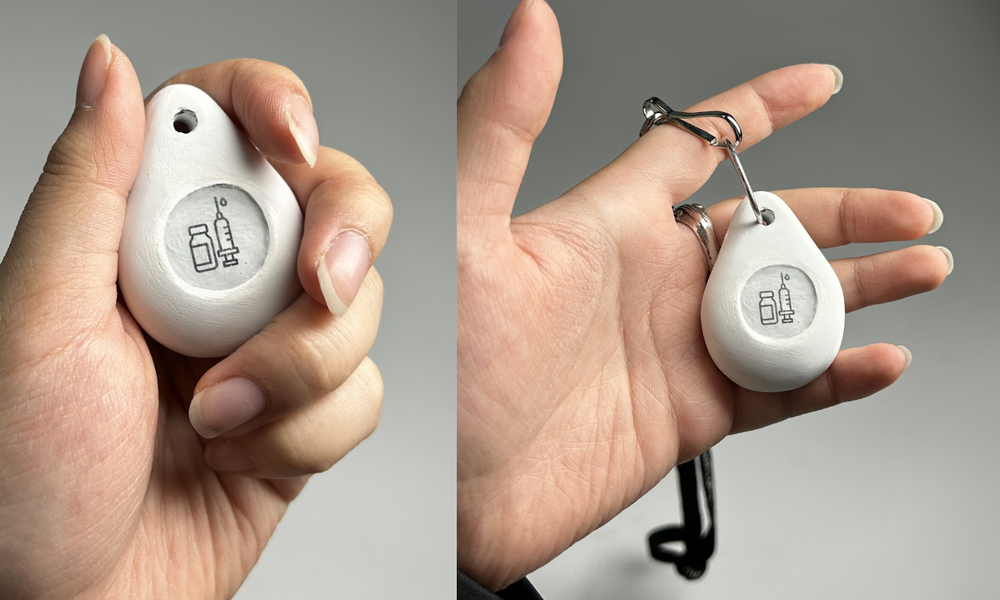
📌 With this small teardrop shape, it is both friendly to touch and carry around
📌 Attachable to a lanyard or clip, making it convenient to keep on your person
06. Task Tone Evolution
Wireframes & Sketches
Initial Planning
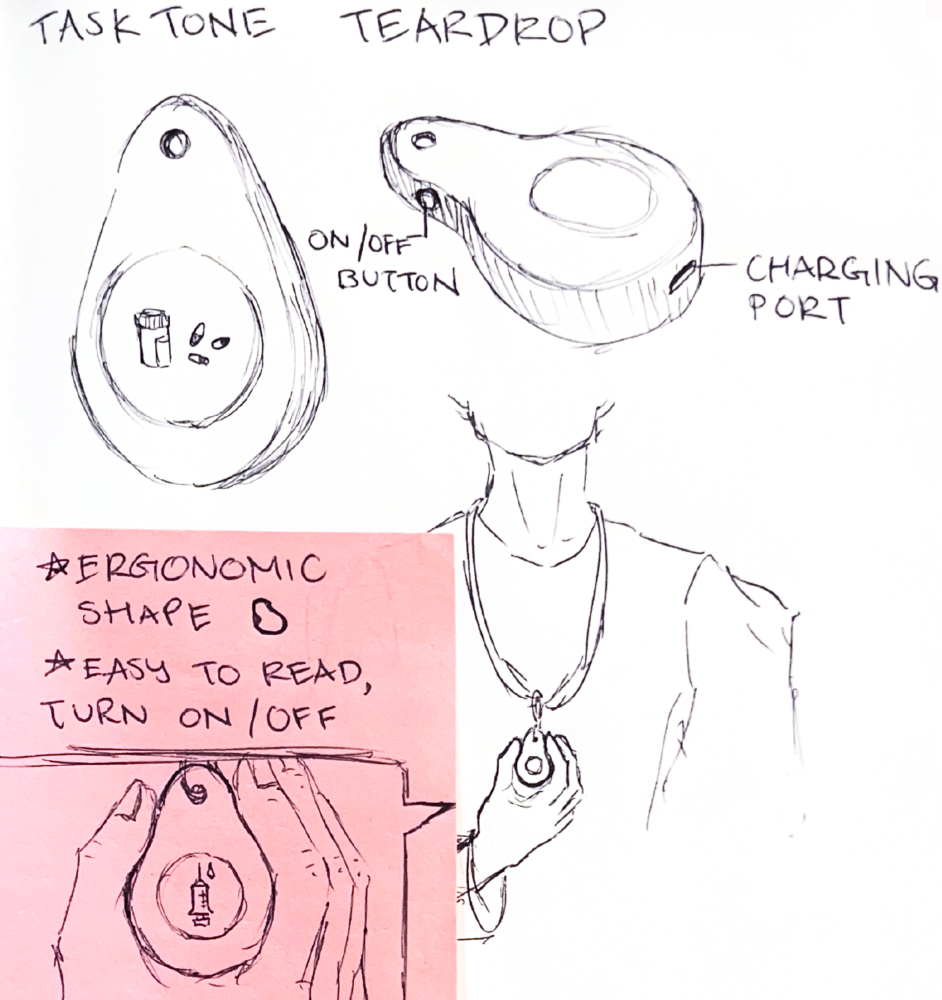
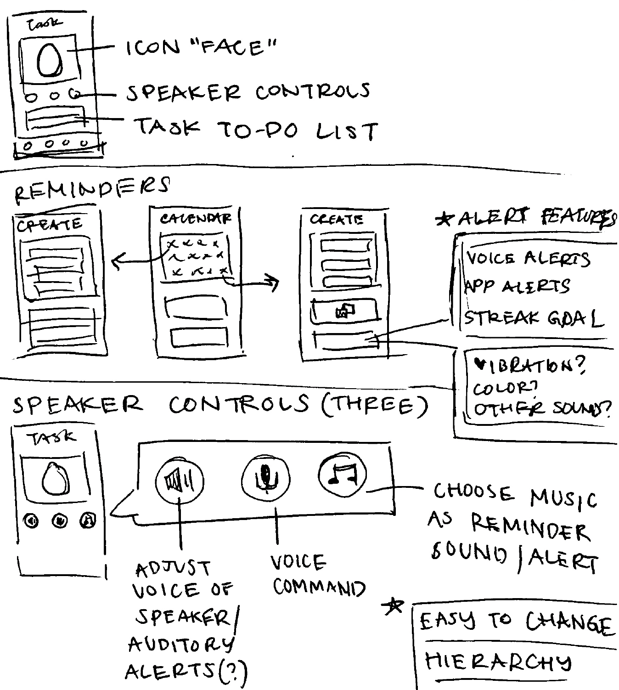
Mid Fidelity Wireframes
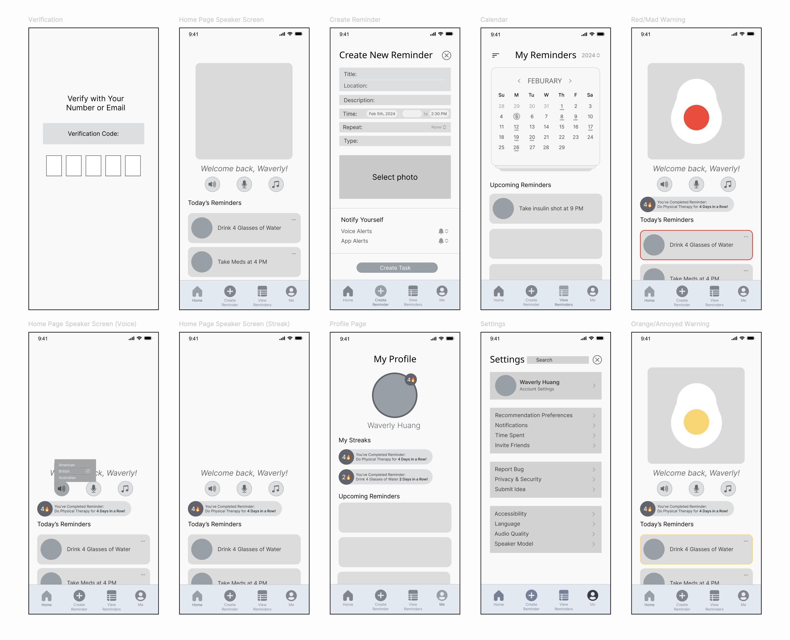
Version 1: High Fidelity Wireframes
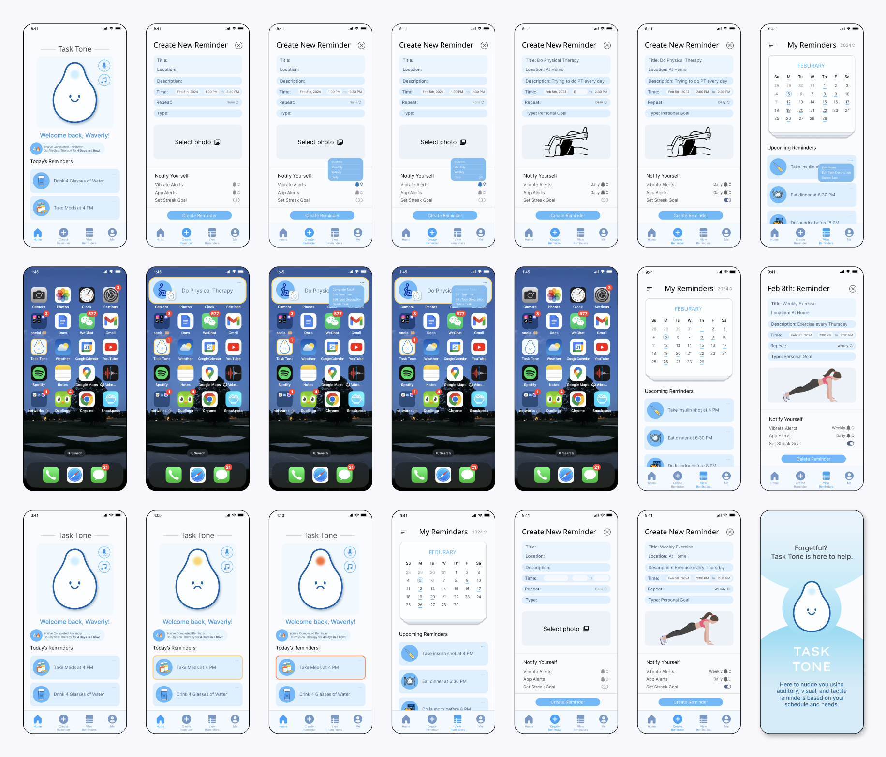
Version 2: High Fidelity Wireframes

07. Interviews & Lessons
User Feedback
"I would really love for this product to actually exist. Especially since my hearing is starting to deteriorate, I feel like it would help me."
— My Mom | The Initial Project Inspiration"Super cool how I can interact with an app and a physical product. I can use both or just one. I could see the physical product living on my purse because of the size."
— Classmate S"I liked seeing the process for both the digital and physical part, that was successful. This project makes it obvious that you really care about who could be using it."
— Classmate JWhat I Learned
People are at the core of product design, whether it be digital or physical. I really enjoyed getting feedback from people about what would make the app or speaker successful, and it was heartwarming to hear how my mom said this would make her life easier.